Data Clustering
Text Data Clustering Part
I got Hillary and Trump tweets data with the allowance of the law. Due to some special restriction, I decided to choose October 2016 to February 2017 as the research window. With the help of CounterVector, I turn the text into vector and use them to carry out clustering.There is something interesting.
Text Data Clustering
There are 4 parts of text data cleaning.
1.Text Data Cleaning(Remove stopwords, no-English words)
2.Using CounterVector to turn words into vocabulary table
3.Clustering and Finding the best K
4.Visualization
Vocabulary Table
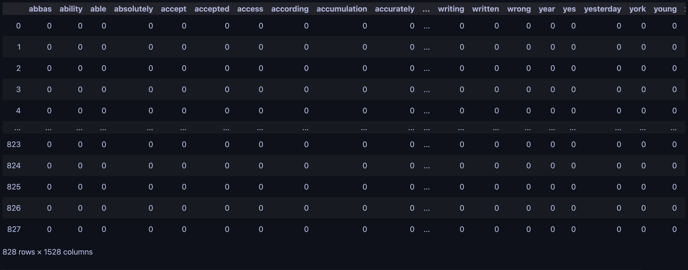Using K-means and Silhouette Score to get the best clustering(best k = 2)
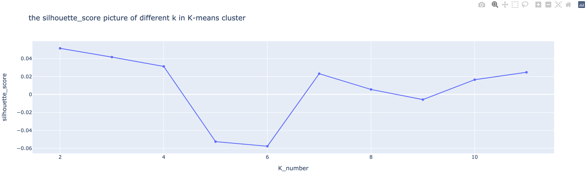Using the SVD to bring data down to 3D and Showing clustering
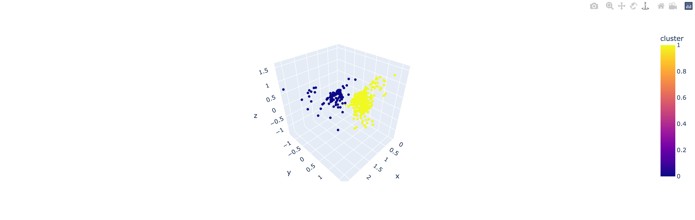Bubbling Graph
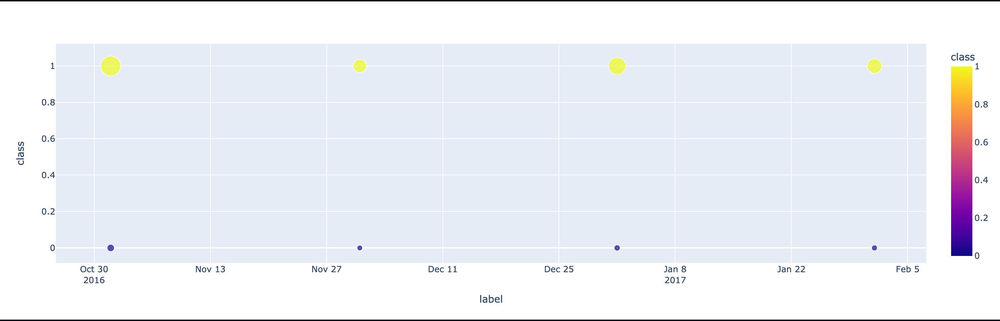I create a Bubbling graph with timeline.The size of point shows the tweets' percentage. The result tells us that on October and December, Hillary and Trump sends most of the tweets. With the help of wordCloud below, We know that most of the tweets are about action.
Keywords in the cluster0 and cluster1
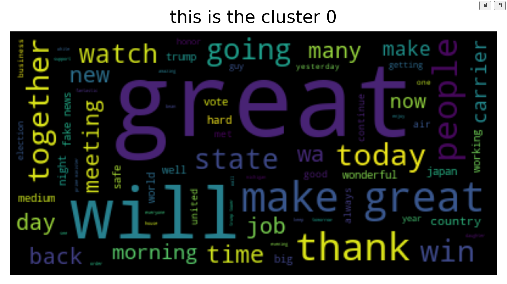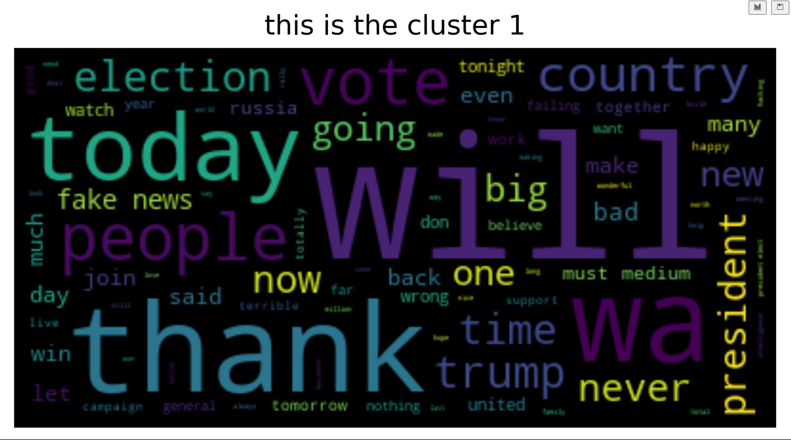
We can find that cluster0 contains many words of action and cluster1 is related to time. That's interesting!
Let's use Hierarchical Clustering compared with K-means
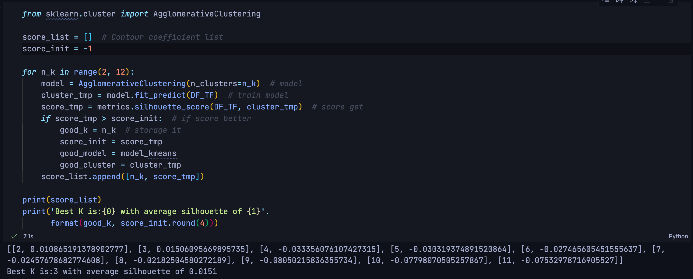Hierarchical Clustering get the result that best k = 3(Silhouette Score). And the best hierarchical clustering silhouette score is 0.0151. However, the best silhouette score of k-means is 0.0514, showing that the text data is more suitable for k-means to clustering. And the 3d vision also show that the data is like a globe shape and globe shape data is suitable for k-means algorithm.
Let's use DBSCAN Clustering compared with K-means
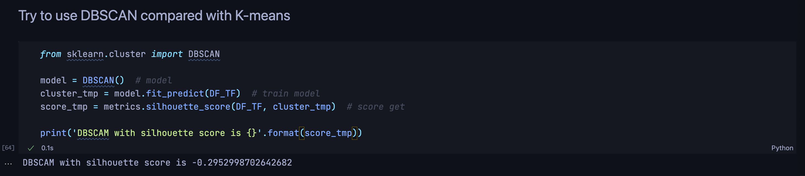DBSCAN Clustering doesn't work in this dataset. And the best DBSCAN clustering silhouette score is negative. Come back to the 3D visualization and find that there are many points outside the high density area. If the density parameter is not suitable, this algorithm doesn't work properly.
Table Data Clustering
Choose the best k of table data
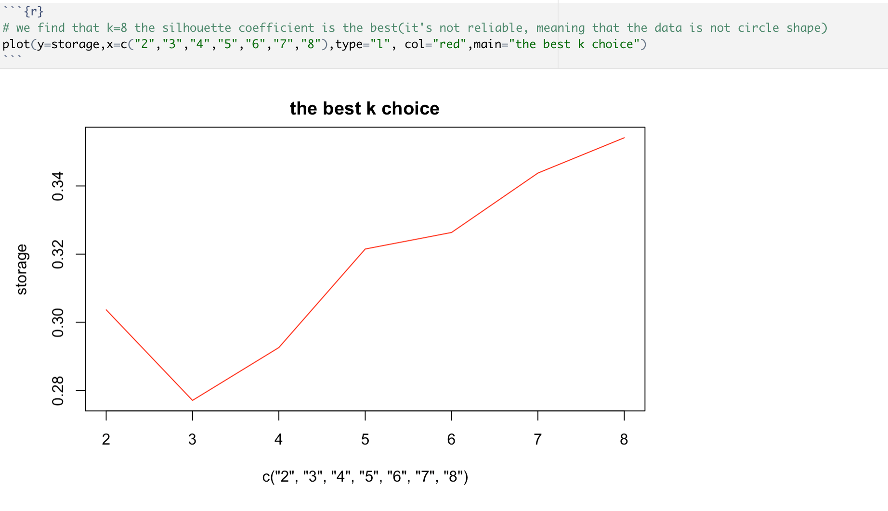The silhouette score line shows that it's not suitable for to use k_means to cluster the data. The score are always in low position and continue to raise as the k rising.
K-means cluster visualization
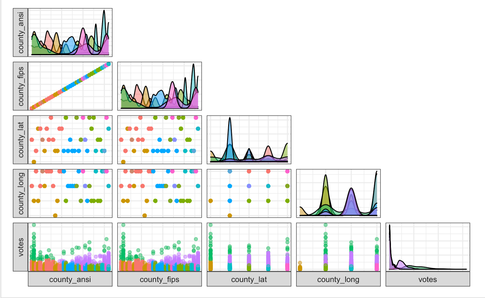Focus on the votes and ansi. We can find that green is a special one. The votes of them are extremely in large number. Therefore, we need to check those county_ansi in green color. Maybe they are the important counties of election.
We can also get more message from the county_long and county_lat.Why the blue point has been seperated by the purple one. Since the nearby county should always have the similar ansi, latitude, longitude, the affecting factor must be votes.
Hierarchical Cluster
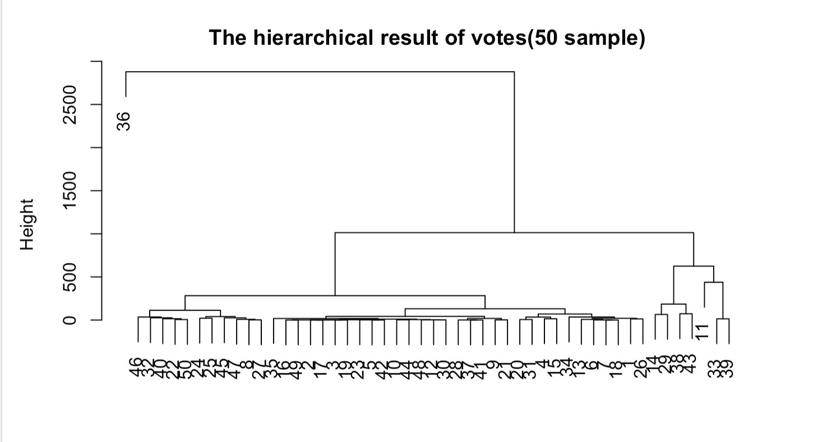Hierarchical Clustering is time-consuming.Therefore, I select the first 50 sample to do the clustering work. It seems that the 36 is a special one.